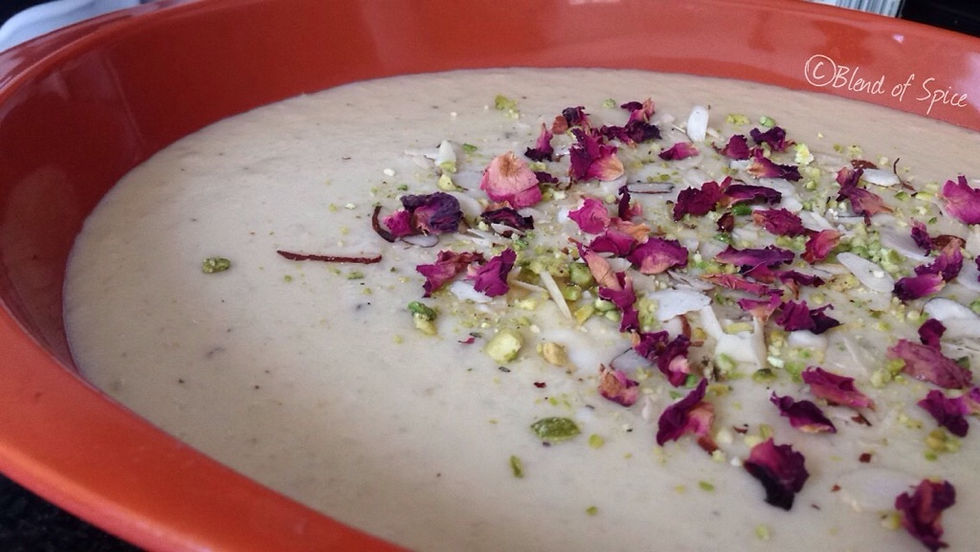

Coconut Rabri Recipe

Ingredients of coconut Rabri
1 Liter full cream milk
1/2 cup grated coconut
1/2 cup khoya
Sugar (as per desired levels)
Cashews
Cardamom
Chopped almonds and pistachios
10 saffron strands (kesar)
Rose petals (for garnish)
How to Make Coconut Rabri
- In a small bowl, soak 10-15 cashews in hot water. Leave it aside for 15 minutes.
- In the meantime, take a pan and pour full cream milk in it. Keep heating it until it starts boiling. When it does, reduce the flame and keep cooking the milk till it's 3/4th in quantity. Make sure to keep stirring it so that it does not stick to the pan.
- At this point, add saffron strands and khoya to the milk. Keep stirring it for a few minutes and scrap whatever gets stuck to the side of the pan. Take a mixer and blend the soaked cashews till they become a fine paste.
- Now add sugar and grated coconut to the mixture. Mix it well and keep stirring till the milk starts to thicken. To this add the cashew paste and keep cooking till it loses its rawness.
- To this mixture, add crushed cardamom and stir it well. Remove from flame and let it cool.
- Transfer the coconut rabri to serving bowls and garnish with rose petals and chopped nuts. And voila! Your coconut rabri is ready to dig in! You can serve it with jalebi or gulab jamun!